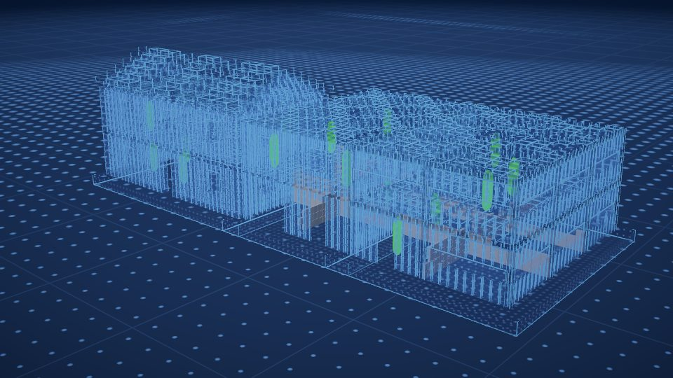
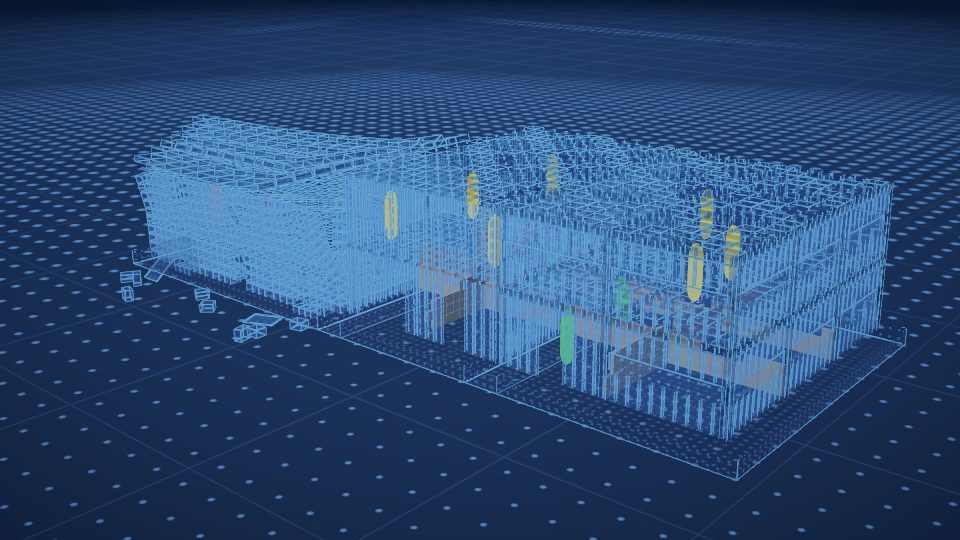
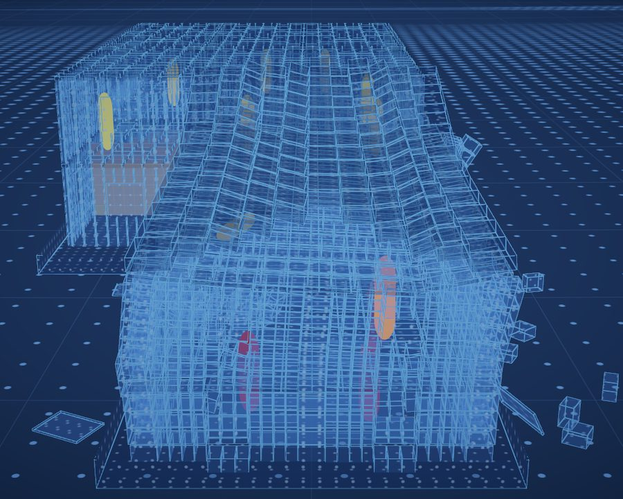
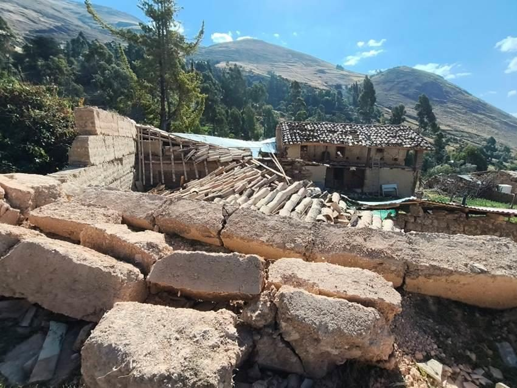
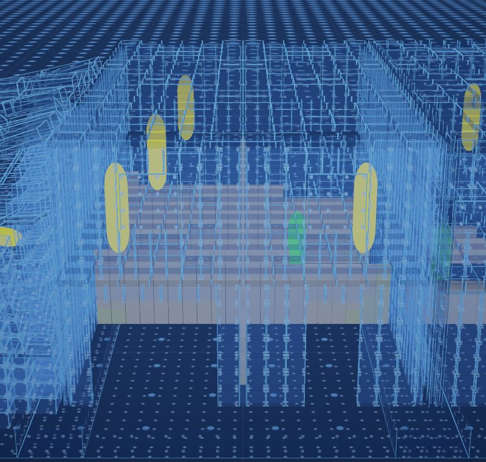
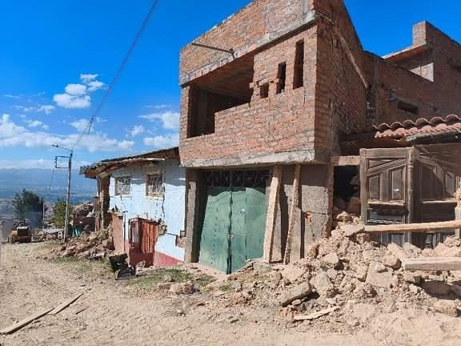
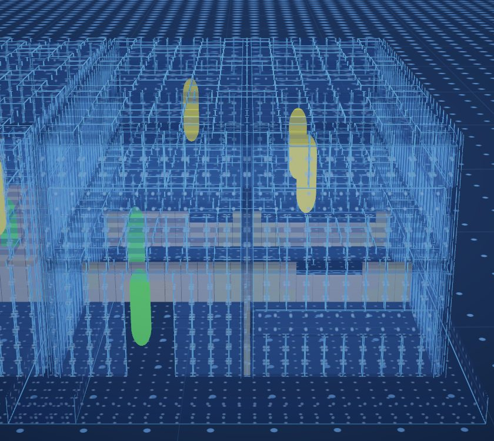
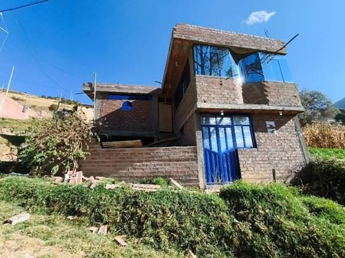

At 21:24 an M5.4 earthquake struck 7 km south of Chupaca. In Pumpunya, an annex of Chongos Bajo, about 90 % of the settlement was destroyed or left uninhabitable. Four of the six or seven people who died lived there, most in adobe houses.
Magnitude
M5.4 (IGP)
Depth
≈ 10 km
Recorded in Huancayo, 18 km away
0.05–0.07 g
Chongos Bajo homes
129 destroyed · 633 unsafe
One street, three ways to build, the same earthquake
We rebuilt a Pumpunya street in EMMA: three two-storey houses side by side, five people in each, shaken by the same ground. Each simulated house is shown next to a house of the same kind photographed after the earthquake.


BEFOREAFTER 12 s · 0.3 g
Pumpunya street in EMMA's transparent view. Drag across the picture to compare before and after. People are coloured by injury.
Adobe with a tiled roof
Old adobe walls 50 cm thick, corners butted rather than bonded, timber floors and a heavy tile roof resting on gables.
Collapsed · 3,075 of 3,104 pieces
People inside (5)
3 killed on the ground floor, crushed under the upper floor. 1 seriously hurt, buried. 1 trapped in a void 1.9 m high.
In Pumpunya
Adobe houses collapsed or were left unsafe to enter.
EMMA · 0.3 g

Pumpunya · CISMID-UNI

Plain clay brick
Hand-made clay brick 13 cm thick, concrete floors, no concrete frame around the walls.
Standing · light cracks
People inside (5)
4 knocked down by the floor shaking, lightly hurt. 1 unharmed.
In Pumpunya
Cracked walls, held up with timber props, standing.
EMMA · 0.3 g

Pumpunya · CISMID-UNI

Confined brick
The same brick, built inside concrete tie columns and beams.
Standing · light cracks
People inside (5)
3 knocked down, lightly hurt. 2 unharmed.
In Pumpunya
No significant damage.
EMMA · 0.3 g

Pumpunya · CISMID-UNI

The ground in all three runs: a synthetic record shaped like what CISMID measured, 12 s long and strongest at 6.7 Hz, the range where one- and two-storey adobe houses shake hardest.
Shaking
Adobe
Plain brick
Confined brick
People
0.15 gestimated for Pumpunya from the recordings
Collapse
A few cracks
A few cracks
Adobe: 3 killed, 2 critical. Brick houses: all 10 unharmed.